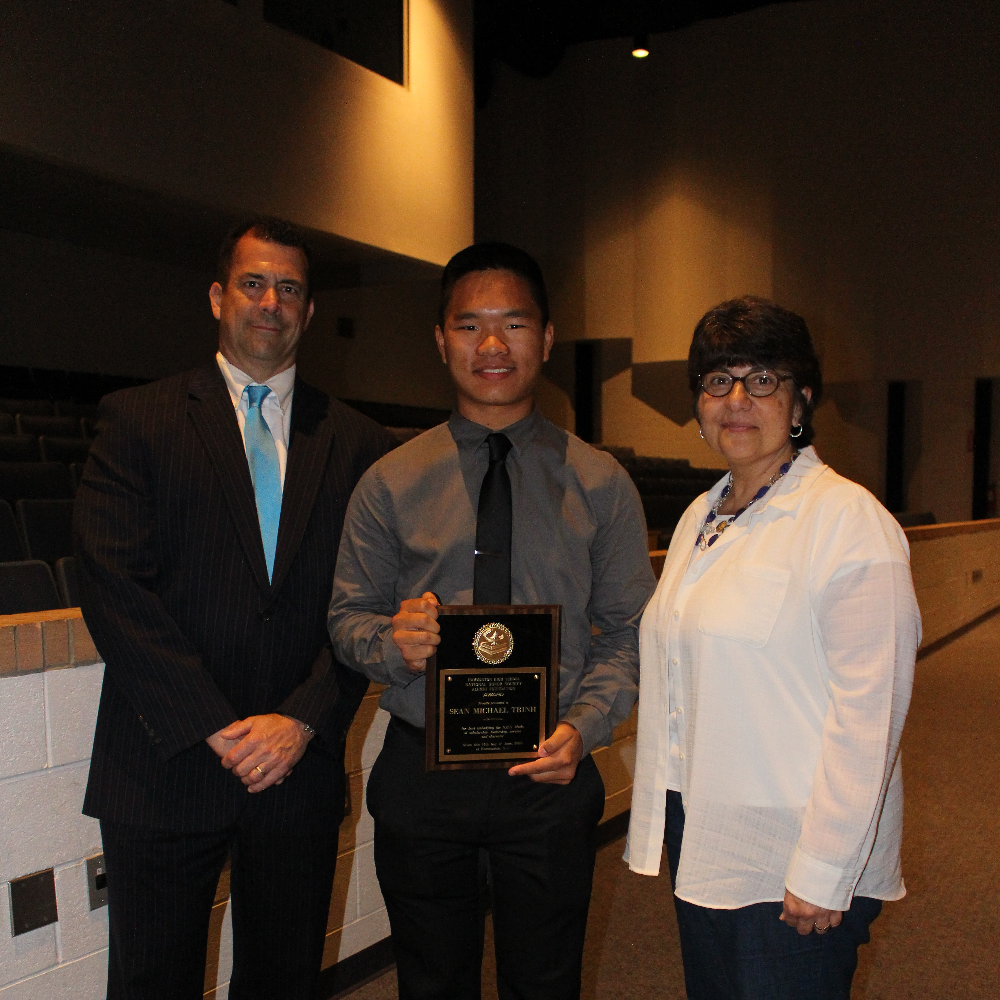

About Me
Welcome to my website! My name is Sean Trinh, and I am currently a sophomore computer science major at Stevens Institute of Technology, and I expect to graduate in May 2020. In the summer of 2018, I will be working as a cybersecurity intern at Lockheed Martin.
Where to Start
On this website, you'll find just a few but convenient tabs for you to use. In the top left, there are tabs to my Facebook page, LinkedIn profile, Github, and Resume each represented by their respective logos. You'll also find a Home tab which will take you back to this page. Next to the Home tab is the My Game Picks tab, where I will be picking who I think will win each game during the NFL season. Lastly, I have a Contact Me! tab that will provide some information on how to get in touch with me.
Below, I have some information available for you to learn more about me. Please feel free to check it out!
Academics
I chose to attend Stevens Institute of Technology because of its prime location next to New York City, a city brimming with opportunity and a technological powerhouse, and its stellar program in computer science. There are many reasons why I chose to study computer science. Admmittedly, I was initially drawn by the "hacker" that I saw in many Hollywood films, but I also learned to fell in love with it from my mom, who is a computer programmer herself!
Within computer science, I am very interested in data analytics, cybersecurity, and machine learning. Although I do have an internship for this summer, I am actively looking to expand my network, make more connections, and hopefully obtain opportunities that would allow me to enter the financial sector, where I can analyze and leverage data to understand information and make smart business decisions, develop applications to protect personal, sensitive, and important financial data and information, and/or use machine learning to make advancements in high-frequency, algorithmic trading.
At Stevens, I am a Course Assistant for CS 284 (Data Structures). I am also the Treasurer for the Stevens Computer Science Club, a Peer Mentor, and an active member of the Society of Asian Scientists and Engineers. During the summer of 2017, I conducted research here at Stevens for a project titled "Smarter Spaces, Smarter Campus". If you would like more information about this research project, below is a link to the paper that me and my team authored and submitted to IEEE UEMCON 2017. Our paper was accepted for oral presentation at the conference, held at Columbia University, and was awarded Best Paper in the category of Control Theory and Applications.
Smarter Spaces, Smarter Campus Research PaperGrowing Up
A little bit more about me: I grew up in the Blueberry Capital of the World, Hammonton, New Jersey. There, I went to Hammonton High School and graduated as the valedictorian with a 4.0 GPA. In high school, I was a part of many clubs, sports, and activities. I was a captain and lawyer for the Mock Trial team, Treasurer and Vice President of the Key Club, and a varsity doubles player on the tennis team. I also volunteered often for MainStreet Hammonton and my local Juvenile Conference Committee. During the summer, I swam competitively for the Hammonton Stingrays. I also worked as a Red Cross First Aid/CPR/AED certified lifeguard at the Hammonton Swim Club and worked as a Pricing and Tagging Assistant at Mazza's Flooring America.
Hobbies
Some of my hobbies include listening to music, reading, browsing the internet for memes, vines, and other ridiculous but funny content, inconveniently taking naps during the week, eating more than I probably should, and most importantly, exercising and playing and watching sports.
Ever since I started seriously weight lifting in college, I have become a sort of "gym rat". I always find time to go to the gym about six times a week, and I constantly strive to improve all of my lifts. My favorite lift to do is considered the hardest by many: deadlifts. Right now my PR (personal record) for deadlifts is 315 pounds for five reps, but I'm dedicated to reaching 405 pounds!

You wouldn't know me if you didn't know that I am a big Philly sports fan. No, I am not the fan who climbs up already greased light poles, nor am I the fan to drive a dune buggy up the Rocky steps. However, I am as passionate as any Philly fan. I watched the Phillies win it all back in 2008, and I am excited to see their young and talented roster in action this spring. I watched a lot of Flyers games when they were making playoff runs every year, and I am more than amped that they have a great shot of making the playoffs this year. As for the Sixers, Joel Embiid and Ben Simmons have easily become superstar talents and two of my favorite Philly athletes. Trust the Process! And of course, the Eagles just recently won Super Bowl LII, a day and experience I will never forget. With Carson Wentz (aka the GOAT) looking to come back next season with an incredibly stacked roster, I'm psyched thinking about the future for this team.
Fly Eagles Fly!